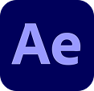
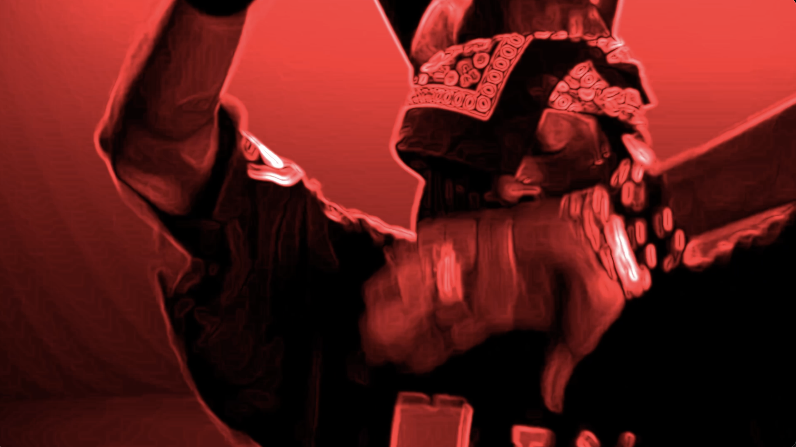
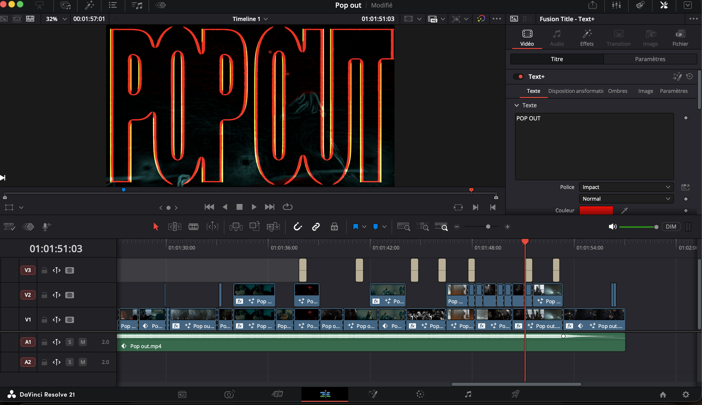
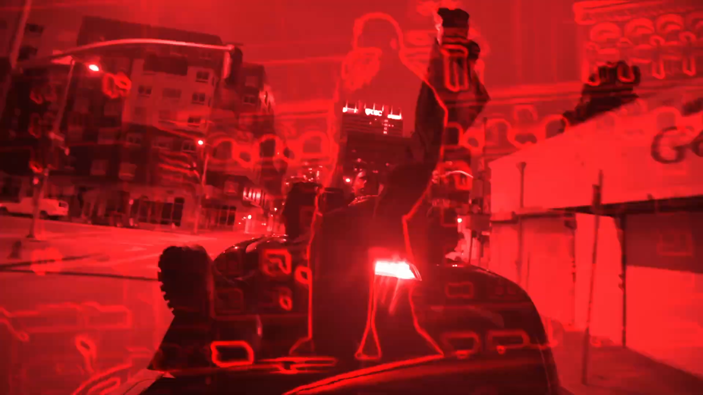
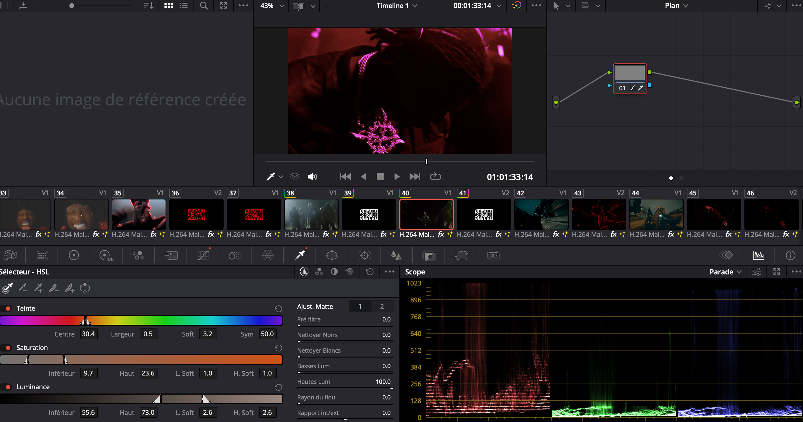
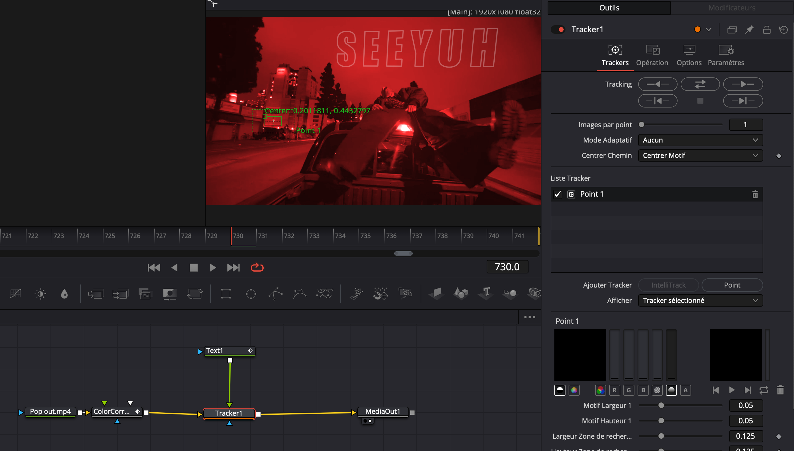

CLIP 02 / 05
TYPE DE PROJET
Montage vidéo & synchronisation audio
CONTEXTE
Projet personnel
L’objectif était de démontrer mes compétences en montage vidéo, synchronisation audio et en effets visuels. Le projet réutilise des extraits de clips et de performances live de Playboi Carti pour construire un tout nouveau vidéoclip.
VOIR LA VIDÉO
Né d'un intérêt pour le montage musical, ce projet m'a permis d'explorer la synchronisation précise entre rythme et coupe. J'ai choisi Playboi Carti pour l'énergie visuelle de ses clips et performances, propice à un montage dynamique.
Sélection des extraits, montage et synchronisation réalisés en solo. Images tirées de clips officiels et de captations de spectacles de l'artiste; musique utilisée à des fins créatives, sans intention commerciale.
PLAN 01
Recherche à travers des vidéoclips et des captations de concerts de Playboi Carti, en ciblant des plans dont l'énergie correspond déjà au tempo choisi.

PLAN 02
Montage des extraits choisis dans Premiere Pro, en ajustant la durée et le point de coupe de chaque plan pour qu'il tombe exactement sur les temps forts de la chanson et pour que cela donne l'impression que le chanteur chante sur cette chanson.

PLAN 03
Passage dans After Effects pour uniformiser des extraits filmés dans des conditions très différentes. Corrections de couleur, transitions et ajout d'éléments graphiques supplémentaires pour que l'ensemble ait une cohérence visuelle , malgré l'origine variée des images.

PLAN 04
Ajout d'effets plus techniques dans DaVinci Resolve, notamment du tracking pour suivre des éléments en mouvement dans certains plans et y superposer des effets additionnels, utilisés sur les séquences les plus intenses du clip pour marquer les moments forts.

PLAN 05
Révision du montage dans son ensemble, section par section, pour repérer les coupes qui manquaient de précision ou les effets qui ne correspondaient pas à l'intensité du moment, avec ajustements de timing et de durée jusqu'à l'obtention d'un résultat cohérent du début à la fin.

VOIR LA VIDÉORéussir à concrétiser toutes les idées de montage et d'effets que j'avais en tête, sans savoir exactement comment les exécuter techniquement.
Recherche de tutoriels et de techniques sur YouTube pour apprendre à reproduire les effets visés, extrait par extrait.
Une meilleure maîtrise des effets spéciaux, notamment comment les pousser plus loin sans perdre le contrôle du résultat final.
CLIP SUIVANT 03 / 05
Intégration HTML/CSS/JS